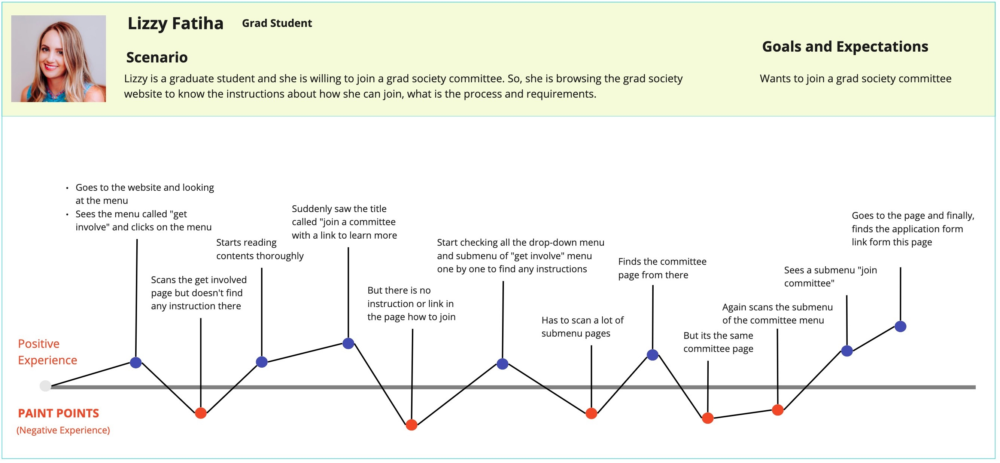
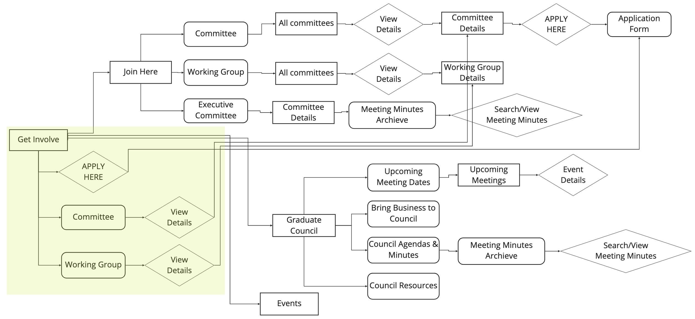

PROJECT OVERVIEW
INTRODUCTION
I have redesigned the graduate student society (GSS) website of Simon Fraser University (SFU), Burnaby, Canada, including a web-browser and smartphone-compatible view working in a team. Our client is SFU grad society administration. The target audience is Graduate Students and Committes of Grad Society.
CHALLENGES
The website should be responsive, user friendly for the university students and easy to maintain by the admin after the contract ends.
One of the main challenges is finding the middle ground between user (SFU students) needs, client's requirements and development capability. Understand and restructure 130 pages into almost half pages (55 approximately) within a short timeline.
Team Work
Role: Information Design, UX Design
Tools: Axure, Miro, Adobe Photoshop, Wordpress
Duration: 8 weeks
SOLUTION
Given below is the embeded demo of the live website. Click to explore the website.
BACKGROUND
PROBLEMS
While the GSS website possesses great content but it’s current imprecise information architecture strategies and unintuitive interaction overwhelm users. Admin also struggles to manage complicated 130 web pages and no automated backend system to add contents. In particular, we aim to address the following issues that I found from research and analysis:
Navigation
Content
Irresponsiveness
Dynamic Interaction
Engagement
Dynamic Content
PROJECT GOALS
The ultimate goal of this project is to create a clean concise and responsive website in order to provide convenient user experience. Due to the huge volume of the website (More than 50 pages), we have divided the projects into three stages to address the solutions-
Stage 1
Information Design
Navigation: Add concise mega menu to the website for easy page navigation and access to the information
Content: Structure content based on priority, relevance and purpose of use, and consistency in page layout to make it easy accessible and understandable.
Stage 2
UX Design
Dynamic Interaction: Add multiple dynamic features where necessary to increase interactive contents. Such as: Add dynamic search options and preview to the document rich pages in order to allow users search their desired file.
User Friendly: Create clean concise and interactive design for user friendly interaction.
Responsive Web Design: Make website responsive across all screen sizes.
Usability Testing: Continuously conduct usability testing step by step to create an environment for effortless user interaction.
Stage 3
Development
Develop full functional redesigned website with dynamic admin dashboard.
CONSTRAINTS
The main obstacles to solve the problems are-
Timeline: We have weekly meetings to showcase work updates and design. Thus, I have to work on the design process with development in parallel.
Technology Restriction: Since the current website is in wordpress that has around 130 pages and admins are familiar with that, we have to choose wordpress to redesign and develop within a short period of time.
Budget: Due to the limited budget I couldn’t take comprehensive user research and usability testing; and enough developers in the team. As a result, I have to work on website development and testing also beside ux design.
Design Bridge: I had to design every single web page in a way that is not only aesthetically pleasing but also implementable by wordpress. That has flexible user interaction and admin can maintain and edit them easily from the admin dashboard.
RESEARCH & ANALYSIS
We were provided with the Clients requirements and expectations. Additionally, I have researched to identify problems and solutions.
EXPERT INTERVIEW
Due to the time constraint I have followed an expert interview method to identify problems. I talked to the executive committee to understand their expectations and problems they want to be resolved. From there I got a good insight into the problem sets that must be resolved.
High Priority
- Responsive interface that has mobile and tab version
- Ability to open Forms inside the website rather going to external link
- Flexible admin dashboard that is easy to maintain by Admin
Medium Priority
- Easy availability of of governing documents
- Add search option for meeting minutes
- Add events and news update
Low Priority
- Make the post share option available
- A current event calendar
HEURISTIC ANALYSIS
Then I conducted a heuristic evaluation of the existing website to discover usability problems with individual elements, design flaws and how they can impact the overall user experience. I have followed Jakob Nielsen's 10 Usability Heuristics for User Interface Design to evaluate the website's usability.
Website Navigation
| Criteria | Severity | Issues | Solution |
|---|---|---|---|
| Consistency & Standards | Major usability problem; important to fix | Navigation bar disappear while scrolling, need to scroll all the way up to find another menu | Make navigation bar fixed at the top while scrolling |
| Consistency | Minor usability problem | No footer section to find out contact information | Add easy access to contact information in the header and footer |
| Simple & natural dialog, Minimize users’ memory load | Cosmetic problem | No call to action button in the website, only tertiary button says “click here” throughout the site | Add a call to action button to the most important action. Show the user links which simply display the name of the item they are linking to, formatted the same way as all the other links on the site. |
| Recognition rather than recall | Major usability problem; important to fix | Regular dropdown menu has too many submenu and hides most of the important user's options. Scrolling hides the options at the top of the menu.User need to rely on short-term memory. | Add a mega menu to reveal lower-level site pages at a glance to accommodate mass features. Everything visible at once without scrolling |
General
| Criteria | Severity | Issues | Solution |
|---|---|---|---|
| Consistency | Usability catastrophe; imperative to fix | Currently, the website contents get broken while browsing from any device other than pc. | Make the website responsive in different screen sizes (Phone, PC, Tablet etc.) |
| Consistency | Minor usability problem | Too many variations of fonts and colors. The text on some of the pages are just graphics.. This gives an overall inconsistent look and feel to the website, making it look unprofessional as well as difficult to read. | Choose one font family for the whole website and be consistent with colors. Translate content from outside sources into this font |
Home Page
| Criteria | Severity | Issues | Solution |
|---|---|---|---|
| Consistency & Standards | Cosmetic problem | It is difficult to read the content to several pages because some of the font is left justified, some are right or centered but the text directly below it, which is kind of an announcement, is centered. | Left justify everything, and bullet the main points. |
| Aesthetic and minimalist design | Minor usability problem | Organization doesn’t make sense, as announcements about the site are right below the navigation bar. One is right aligned but others are left aligned. | Either make the home page a place for a short, general description of the site as well as announcements or create an “Newsletter” page where news and updates to the web site |
| Consistency & standards | Minor usability problem | No logo or name of the website in the home page or header. | Add website logo and title in the homepage. |
Other Pages
| Criteria | Severity | Issues | Solution |
|---|---|---|---|
| Flexibility and efficiency of use | Major usability problem; important to fix | Meeting minutes and other documents are listed as infinite scroll. No files category or folder and No option to search particular pdf files from tons of files listed on a page. Need to scroll and scan all files. | Organize document archives (meetings, budgets etc.) to make it easily accessible to the users. Add custom searching to facilitate easy access to important policy, documents, events and services. |
| Consistency and standards, Help and documentation | Major usability problem; important to fix | Page contents are not well structured and hard to find information and inconsistent page layout. Misleading connection between pages which are not related. Lacks of direction to reach any application or submission forms | Create consistent page layout and information design across the website. Highlight the application forms and show proper guidance to perform any action. |
USER JOURNEY MAP
From the user interview, I have created a journey map of that shows the struggle of a grad student to find her desired information.
By analyzing the client, user research and usability testing we came up with the solutions to address the current website problems.
INFORMATION DESIGN
TAXONOMY
I have designed Taxonomies to classify various items on the website and understand hierarchal relationships. For example, given below are the taxonomies for the About us, Services, Advocacy, Get Involved and Caucus pages.
{kind=link}
{kind=link}
{kind=link}
{kind=link}
{kind=link}
SITEMAP
Taken into account the client's preferences and understanding the relationship between contents I have designed the sitemap of the website.
INFORMATION ARCHITECTURE
Once I have the basic structure of the website I dig into deep by creating an information architecture to exhibit the detailed information. I used different shapes to differentiate actions, pages and contents (see legend).
Due to the very complex and huge architecture, I am presenting the information architecture of About us, Services, Advocacy, Get Involved and Caucus pages separately below.
{kind=link}
{kind=link}
{kind=link}
{kind=link}
{kind=link}
SOLUTION
DESIGN PRINCIPLES
I have followed a set of Gestalt Principles of Design to guide visual design of the final website prototype.
Similarity
Proximity
Closure
Continuation
DESIGN
I have followed an iterative design process to create wireframes and final website.
Landing Page
1. Wireframe
Before
Currently in client's website, Home page only contains few blog posts and recent post sidebar. The main navigation bar lacks structures and appropriate menu option.
New Home Page Wireframe Annotation:
Header
Top Navbar (1) shows the contact info, social media, primary and secondary button for the most frequently used pages. Megamenu (2) shows the submenu and catagory that allows users to search for the desired information quickly and easily.
Banner and CTA
Relevant hero image and Slogan of the website. CTA (4) shows the most important features of the website and a secondary button (5) to highlight the feature that user uses most.
Quick Intro
About us presents a quick introuduction to let users know who are gss. The interactive accordion in MISSION (7) presents the moto and purpose of gss. The secondary button (8) will redirect user to the about us page where they they can know more about gss.
Service
Shows the important services that gss provides and frequently used services by the students (9). Visit all services (10) will redirect user to the service page.
Event
User can know about the gss events from here (11). A dynamic event panel is added here to automatically add upcoming event here from the main event page (14). Event detail button (15) will redirect to the event details page. User can also view the past events from the past event tab (13) and browse all events (17) from the main event page.
Blog post
Newsletter blog (18) shows some of the latest post so that user remain aware of the latest information. They can also view details (20) and scroll to the next and previous posts (21).
Footer
Footer area highlights the contact info, social media info and other information.
Now
Taking into account the infromation architecture, I have designed the Home Page wireframes in Axure. Given below is the annonated and interactive wireframes of Home page.
2. Mega menu design
One of the critical design dicision was to replace traditional dropdown navigation bar with Megamenu in order to assure easy access to essential information to user.
3. Low Fidelity Prototype
4. Design and Expert Review
After presenting the live website landing page design demo, the reviews from client and executive committee are -
- Make the navigation bar ribbon bigger
- Include the executive committee people intro somewhere in the home page
- Remove long history, can show short history in desktop
- In the mobile version, guide people to the interactive content in home page rather than showing history in the home page
About Us & Get Involved
1. Wireframes & Low Fidelity Prototype
About Us
Get Involved
2. User Flow
One of the major concerns of the client is to restructure the Get Involve feature to make information easily accessible to students. Given below is the simplified user flow of Get Involve Megamenu.
3. Design & Usability Testing
Following the user flow, I have conducted usability testing of the get involve feature with two students.
- Students are getting confused to explore megamenu as some of the mega menu group headings have their own landing pages, some don't.
- Campus menu is not linked with page
- The same logo throughout all the content cards making it monotonous and repetitive.
Services & Caucus
1. Wireframes & Low Fidelity Prototype
Services
Caucus
2. Design & Expert Review
LOW FIDELITY PROTOTYPE
I have created the interactive website prototype in Axure. Click to explore the prototype.
ITERATION
Based on the review and usability testing till now we have iterated the website design.
- Removed people content block from home page
- Removed icon from committee cards and redesigned
- Made announcement center aligned
TESTING
QUALITY ASSURANCE
I have to test the website multiple times to report the bugs to the developers and discuss solutions.
| About US | Services | Get Involve | Caucus | Home and Newsletter |
|---|---|---|---|---|
| Write mission and vision description, edit new gss dircetor information, create campus page, edit contact us map, remove internal gov doc description first line, edit contact us page info | Change red announcement font of prof dev grant page, health and dental menu not linked with page, remove faq from menu, update legal service features when gss give us update | Edit event page, bring buisness to council page need to redesign, create CTA for the counselor resource page, create CTA for rsvp form in bringing business to council page, remove icon from the committee and other cards, redesign content card. | Caucus landing page empty, add caucus resources to drop down, put caucus websites list under caucus page | Add link to all Sevices |
INTERNAL TESTING
We have provided the functional website link to the client and they will handover it to the committee to test thoroughly.
USABILITY TESTING
We have to ensure easy and flexible experience for two types of user -
- Graduate students who are the main user of the website and
- Website admins who handle the website admin dashboard.
As a result, I have to conduct usability testing of the website after completion of the fully functional website in the following two stages:
- End User: Recruit participants from graduate students to make sure the final product provides a smooth user experience.
- Admin: Test admin dashboard with admin panel of the website to make sure it is easy to maintain by them after ending contract period.
REFLECTION
Great understanding between client and developer team is key to a successful product. Clients are the experts in their field while we are specialized in design and development. While working, I learnt to simplify design terms and concepts when explaining design decisions. At the same time, I really appreciate our client for being understanding of our decisions.
As we were working with a tight deadline and the website has more than 50 pages , I have spent a significant amount of time creating taxonomy and information architecture at the beginning to understand the whole website and restructure it properly. As a result, we could work on the development phase having less complexity.
Going beyond ux design, I have collaboratively worked on developing websites with my team. Within such a short period of time, I have learnt Wordpress and Elementor and created multiple pages of the website. I have spent a significant amount of time learning a new framework so quickly which made me more confident to be able to learn anything for work demand quickly.